Proyecto para el curso de Series Cronológicas de la Licenciatura en Estadística
Se analiza la serie de tiempo del IMAE siguiendo una metodología de descripción, identificación, estimación, validación y predicción, con el objetivo de identificar un modelo adecuado para realizar pronósticos. Se aplican diversas técnicas, como la transformación logarítmica, la identificación y filtrado de tendencia y estacionalidad, y el análisis de la FAC y FACP para proponer un modelo SARIMA. Sin embargo, la transformación logarítmica redujo la significancia de los coeficientes, por lo que se descartó ese enfoque.
Posteriormente, se evaluaron los residuos del modelo, detectándose incumplimientos de algunos supuestos, lo que llevó al ajuste de valores atípicos. Aunque esto mejoró el comportamiento de los residuos, generó nuevos problemas de significancia en los coeficientes, por lo que se consideró un modelo alternativo, repitiendo el proceso de validación y ajuste. Finalmente, se realizó una predicción a 8 meses, evaluando el desempeño predictivo dentro y fuera de la muestra mediante una partición train-test, y se obtuvieron las métricas de predicción correspondientes.
En este documento lo que hacemos es analizar la serie de tiempo del IMAE (Indicador Mensual de Actividad Económica), que es un indicador económico sintético, construido a partir de otros indicadores individuales combinados, derivados de distintos sectores de actividad económica, como agropecuario, minería, manufactura, energía, salud, finanzas, etc. El IMAE es un indicador de corto plazo reportado mensualmente. Se basa en estadísticas y métodos contables. El IMAE es un índice de Laspeyres mensual con base 100 en el año 2016; indica la actividad económica con una frecuencia mensual a precios constantes de 2016. Para calcular el IMAE, vemos el valor agregado a precios básicos de cada una de las actividades económicas, agregando los impuestos netos de subsidios a los productos, utilizando las ponderaciones de las cuentas nacionales base 2016. La razón de usar indicadores mensuales es ver el valor agregado de las industrias y de los impuestos netos de subsidios sobre los productos. La publicación del IMAE se hace a los 60 días de que termina el mes.
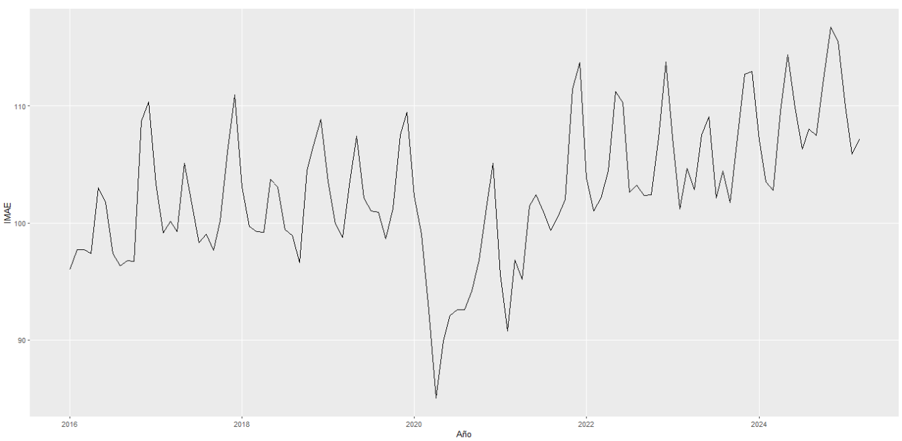
PreProcesamiento de Datos: Los datos que tenemos los obtuvimos de la p´agina del Banco Central Del Uruguay. Los datos van desde Enero de 2016 hasta Marzo de 2025 y son mensuales, mostrando el valor del IMAE para el primer d´ıa de cada mes. No hay valores nulos en nuestros datos. Convertimos los datos a tipo ts (time series) para poder operar mejor con ellos en el R.
Medidas de Resumen de la serie: El m´ınimo valor que toma la serie es 85.03 y se alcanza en Abril de 2020, el m´aximo valor que toma la serie es 116.73 y se alcanza en octubre de 2024. El primer cuartil vale 99.10, el tercero vale 107.21 y la mediana vale 102.36. La media vale 102.76. La varianza es 34.71 y el desv´ıo est´andar 5.89. El rango intercuart´ılico vale 8.10
Se aplicó la transformación logarítmica a la serie para homogeneizar la varianza y linealizar la tendencia, logrando reducir la varianza de 34.71899 a 0.0033, sin cambios visibles en la forma del gráfico. Luego se analizaron la FAC y la FACP de la serie original y la logaritmizada, las cuales resultaron iguales. En la FAC se observaron varios rezagos significativos al inicio, con una convergencia lenta hacia cero y algunos rezagos estacionales (24 y 36) significativos. En la FACP, los rezagos hasta el 13 alternan entre significativos y no significativos, y posteriormente permanecen dentro de la banda de confianza. Con base en estos resultados, se concluye que la serie no es estacionaria.
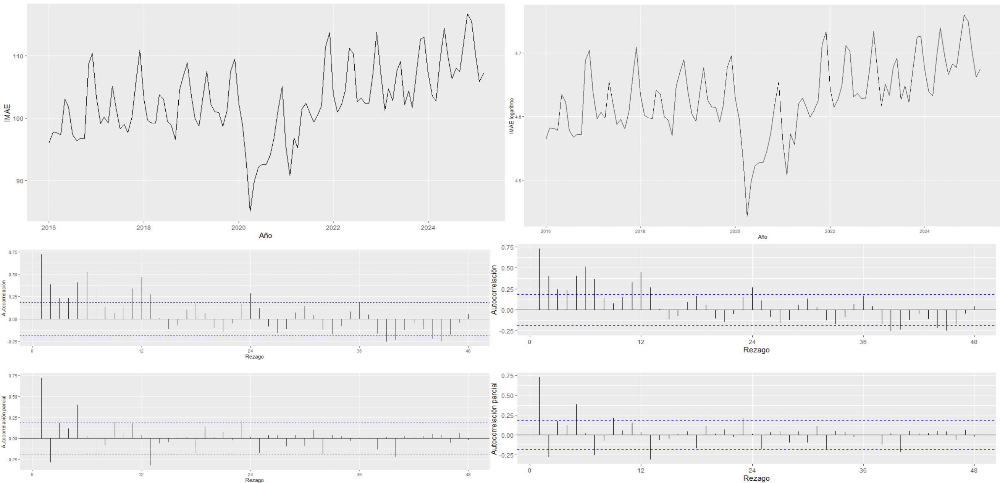
En esta sección se analizó la presencia de tendencia en la serie mediante distintos tests estadísticos. Tras confirmarla, se aplicó una diferencia regular para filtrarla y se repitieron los tests sobre la serie diferenciada para verificar su eliminación. El análisis gráfico, junto con la FAC y la FACP de la serie diferenciada, mostró que la tendencia creciente fue efectivamente eliminada.
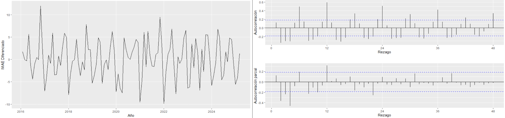
Se aplicó el test de Dickey-Fuller para evaluar la presencia de raíces unitarias y, por tanto, la estacionariedad de la serie. En la serie original, se utilizó el test con tendencia, seleccionando manualmente 6 rezagos para eliminar la autocorrelación de los residuos. Los resultados mostraron que no se rechaza la hipótesis nula, indicando la presencia de raíz unitaria, tendencia estocástica y no estacionariedad, lo cual fue confirmado tanto por el estadístico t como por los estadísticos F asociados a φ₂ y φ₃.
Al aplicar el test a la serie con diferencia regular, los resultados cambiaron significativamente: se rechazó la hipótesis nula, evidenciando la ausencia de raíz unitaria, la eliminación de la tendencia y la estacionariedad de la serie diferenciada, conclusión respaldada por los estadísticos t y F.
Se realizó un ajuste lineal a la serie original para detectar tendencia, obteniendo un p-valor menor a 0.05 y una pendiente positiva, lo que indica una tendencia creciente. En cambio, al ajustar una recta a la serie con diferencia regular, el p-valor fue mayor a 0.05 y la recta resultó prácticamente horizontal, evidenciando que la tendencia fue eliminada. Se aclara que este procedimiento no constituye una prueba formal de tendencia determinística, sino un método exploratorio para identificar comportamientos crecientes.
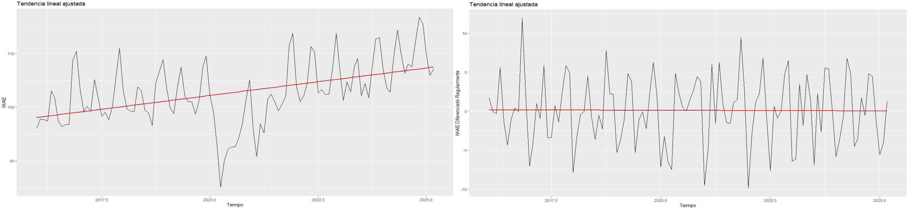
Otro test de tendencia que hice fue el an´alisis del espectro que nos sirve para detectar tendencia, la cual se da cuando la frecuencia cero explica gran parte de la varianza (´area debajo del espectro), que es lo que ocurre en nuestra serie original (imagen izquierda). Cuando hacemos el an´alisis del espectro para la serie diferenciada regularmente (imagen derecha), vemos que la frecuencia cero explica muy poco la varianza, lo que es un indicador de que filtramos la tendencia.
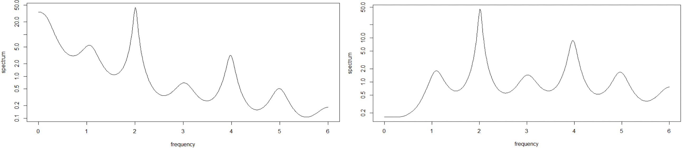
Se aplicó una diferencia estacional a la serie que ya tenía diferencia regular para reducir la estacionalidad, evaluando el resultado con distintos métodos. Al comparar los espectros, los picos en las frecuencias 2 y 4 —indicativos de estacionalidad— desaparecen tras la diferencia estacional, mostrando una reducción importante, aunque no total, de este componente.
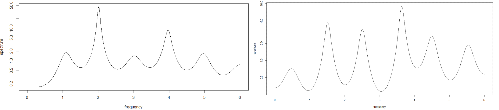
Además, la FAC de la serie con solo diferencia regular presentaba rezagos significativos en múltiplos de 6, señal clara de estacionalidad. Estos rezagos y su patrón desaparecen al aplicar tanto la diferencia regular como la estacional, confirmando que la estacionalidad fue en gran medida filtrada.
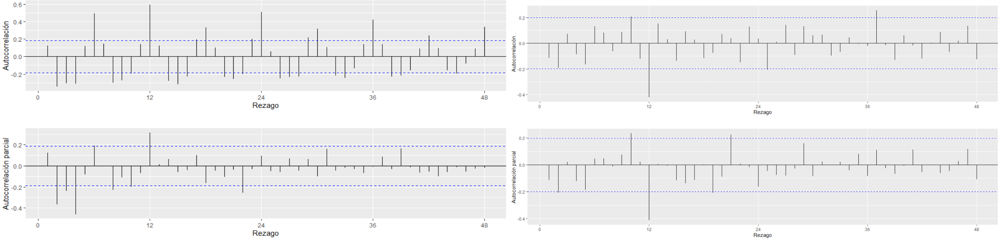
La estacionalidad también se identificó mediante el ggmonthplot. En la serie con solo diferencia regular se observó un patrón mensual claro y repetitivo: valores bajos en enero, altos en mayo, octubre, noviembre y diciembre, y medias mensuales distintas, lo que confirma un comportamiento estacional anual. En cambio, en la serie con diferencia regular y estacional, estos patrones desaparecen y las medias mensuales se vuelven similares.
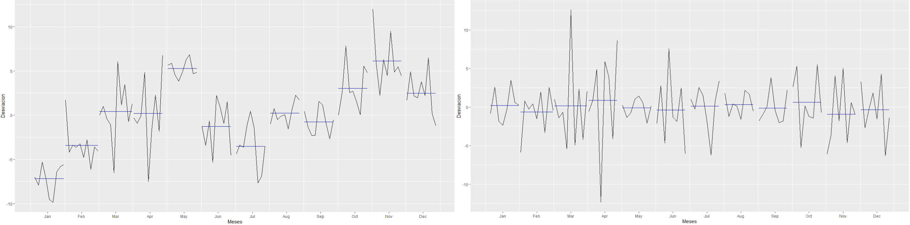
Finalmente, se utilizó el test KPSS para verificar la estacionariedad. En la serie original se rechazó la estacionariedad (p < 0.05), mientras que en la serie con diferencia regular, y también con diferencia regular y estacional, no se rechazó la hipótesis nula (p ≥ 0.05), confirmando que las transformaciones lograron una serie estacionaria.
A partir de la FAC y FACP de la serie (con diferencia regular y estacional), se propuso inicialmente un modelo SARIMA(0,1,2)(0,1,1). La parte regular se justificó por la presencia de dos rezagos significativos en la FAC (q = 2), ausencia de rezagos AR (p = 0) y una diferencia regular (d = 1). En la parte estacional, la significancia del rezago 12 indicó un MA estacional de orden 1 (Q = 1), sin evidencia de AR estacional (P = 0), y se aplicó una diferencia estacional (D = 1).
Al estimar el modelo, se observó que al usar la serie logaritmizada los coeficientes no resultaban significativos, mientras que con la serie original sí lo eran, por lo que se decidió descartar el logaritmo. En el modelo final, los coeficientes ma1, ma2 y sma1 resultaron significativos.
En el análisis de residuos se cumplieron los supuestos de incorrelación y homocedasticidad, pero no el de normalidad. Para corregirlo, se ajustó el modelo considerando valores atípicos, detectados mediante la función tso del paquete tsoutliers, incorporando estos efectos como regresores externos y reestimando el modelo SARIMA.
Vamos a mostrar el diagn´ostico de los residuos que hicimos para el modelo original y el re-diagn´ostico que hicimos para el modelo ajustado por los outliers, para ver que mejoro
Para el modelo seleccionado y el modelo ajustado por outliers, se analizaron la FAC y la FACP de los residuos, observándose que los rezagos se mantienen dentro de los intervalos de confianza, lo que indica incorrelación. Aunque en el modelo ajustado apareció un rezago aislado (rezago 3) aparentemente significativo, no se consideró relevante al confirmarse la incorrelación mediante pruebas formales.
Posteriormente, el test de Ljung-Box arrojó p-valores mayores a 0.05 en ambos modelos, por lo que no se rechazó la hipótesis nula, concluyéndose que los residuos son incorrelacionados.
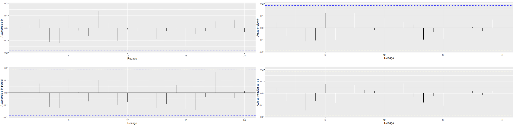
Se evaluó la normalidad de los residuos de ambos modelos mediante QQ-plot y los tests de Shapiro y Jarque-Bera.
Para el modelo seleccionado, los residuos no siguen una distribución normal: Shapiro p = 0.004268 (<0.05), Jarque-Bera global p < 0.05, y el test de curtosis también rechazó la normalidad. Solo el test de asimetría no mostró problemas (p = 0.2303).
Para el modelo ajustado por outliers, todos los tests (Shapiro y Jarque-Bera, global, simetría y curtosis) dieron p > 0.05, indicando que los residuos siguen una distribución normal.
En conclusión, ajustar los outliers solucionó los problemas de normalidad en los residuos.
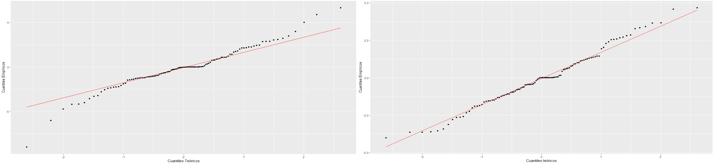
Se verificó la homoscedasticidad de los residuos calculando los residuos al cuadrado y aplicando el test de Ljung-Box, contrastando: Ho) residuos homoscedásticos vs H1) heteroscedásticos.
Para el modelo seleccionado, p = 0.6093, y para el modelo ajustado por outliers, p = 0.7384; en ambos casos no se rechazó Ho, indicando varianza constante.
Además, la FAC y FACP de los residuos al cuadrado mostraron que la mayoría de los rezagos no son significativos en ambos modelos, lo que refuerza la posible homoscedasticidad.
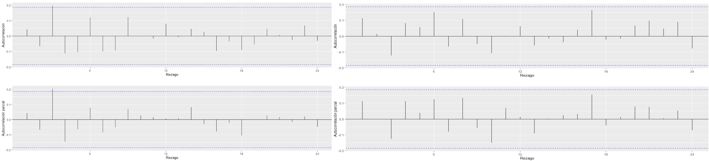
Se comparó la serie original con la serie ajustada por outliers, destacando un outlier en abril de 2020, correspondiente al inicio de la emergencia sanitaria por COVID-19, con un efecto transitorio (TC) que disminuyó gradualmente hasta 2022, reflejando la estabilización económica.
Al incorporar los outliers en el modelo inicial, se detectó que algunos coeficientes (ma2 y sma1) no eran significativos. Se ajustó el modelo a un SARIMA(0,1,1)(0,1,1), verificando nuevamente los residuos: se cumplían incorrelación y homoscedasticidad, pero no la normalidad, la cual se logró tras un segundo ajuste por outliers. En este modelo final, todos los coeficientes resultaron significativos.
Finalmente, comparando criterios de selección (AIC, AICc, BIC), se concluyó que este modelo ajustado por outliers era el más adecuado y se continuó el análisis con él.
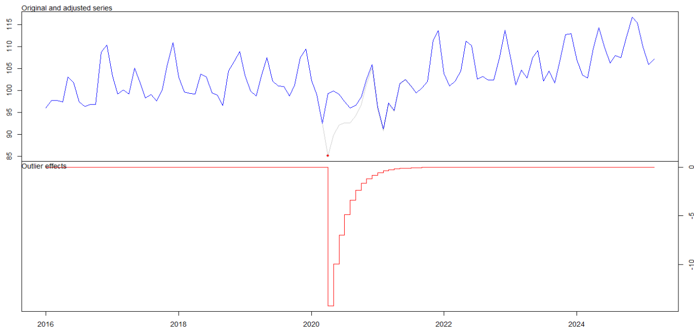
Se realizó una predicción a 10 meses del IMAE, desde marzo de 2025 hasta enero de 2026. Para esto, se definió un horizonte de predicción de 10 meses y se generó la matriz newxreg1 con los efectos de los outliers futuros, detectados previamente con tso. Esta matriz incluye los valores esperados de los outliers para los periodos de predicción (t+1 hasta t+h) y se utilizó como variable explicativa en la función forecast del modelo ajustado por outliers para obtener las predicciones futuras.
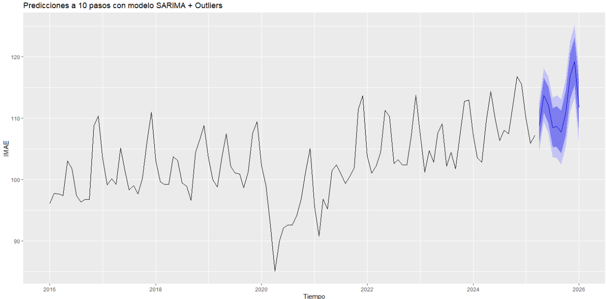
Para obtener la tasa de crecimiento interanual para los valores de 2025, seguimos usando los valores predichos para 2025 y los compararemos con su correspondiente valor de 2024 a traves de la siguiente formula:
Tasa de crecimiento interanual: \( \left(\frac{V_t}{V_{t-12}} - 1 \right)*100 \)
Fuimos alicando esa formula para los valores predichos que van desde abril de 2025 hasta diciembre de 2026 con los valores reales ocurridos en ese mismo periodo pero desde abril de 2024 hasta diciembre de 2025.
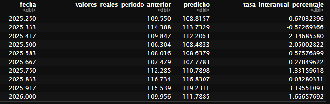
Luego para Tasa promedio anual de crecimiento IMAE 2025 respecto a 2024 la formula es
Tasa de crecimiento anual promedio: \( \left(\frac{\bar{V_{2025}}}{\bar{V_{2024}}} - 1 \right)*100 \)
y al aplicar obtenemos el valor de 0.64%. El crecimiento del IMAE para 2025 sera de 0.64%.
Se dividió la serie del IMAE en conjunto de entrenamiento (train) y conjunto de prueba (test). Se usaron 99 observaciones (01/01/2016 a 01/03/2024) para entrenar el modelo y 12 observaciones (01/03/2024 a 01/03/2025) para evaluar su rendimiento dentro de la muestra.
La predicción dentro de la muestra mostró resultados similares a los valores reales, con pequeñas variaciones. La mayoría de los valores observados se mantuvo dentro de la banda de confianza, aunque al inicio el modelo tuvo un peor desempeño, bordeando la banda de confianza.
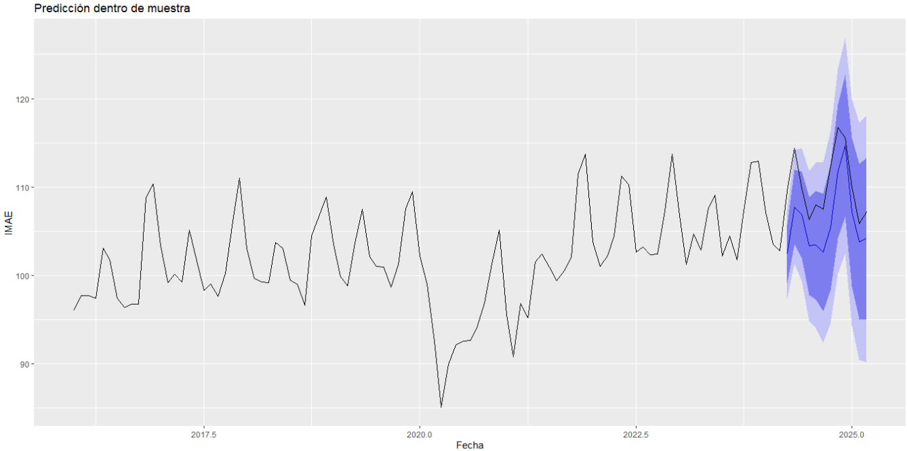
Podemos comparar ambos valores, reales vs predichos dentro de la muestra con la siguiente tabla
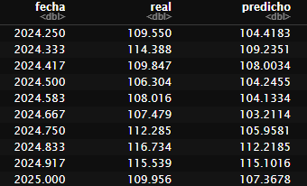
O podemos evaluar la calidad de la prediccion con distintas metricas:
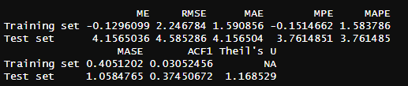
Tras seguir la metodología del informe, se concluye que el modelo obtenido, aunque no perfecto, está bien seleccionado y tiene buena capacidad predictiva, según los parámetros de error evaluados. Los tests de tendencia y estacionalidad fueron clave para mejorar el modelo, así como la consideración de outliers que podrían afectar su rendimiento. Se observó que la transformación logarítmica no fue muy efectiva. Además, se resalta que el trabajo con series de tiempo no es automático: requiere iterar técnicas, verificar supuestos y evaluar el desempeño continuamente, en un proceso de aprendizaje y mejora continua.